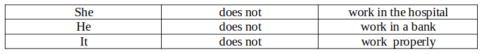
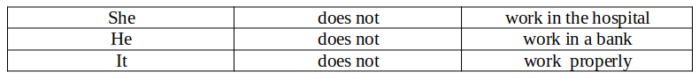

Make your English better.
Simple Present Tense
General
A tense is any of the forms of a verb that may be used to show the time of action or state expressed by the verb. Meanwhile the simple present tense is used to express something permanent or habitual.
Elementary Level
In a proper English sentence you must have subject – predicate – object, with the exceptional of the imperative sentence (kalimat perintah) which has no subject. For example ; Sit down!, Go away!
In a sentence, whereas the predicate is not a verb, the predicate may be in the form of auxiliary verbs, hence the sentences will go as follows ;
How to put the sentence into question : is by putting the predicate in front of the subject, as follows :
When you use a verb as a predicate and you have a third singular person as the subject of the sentence, add “s” to the verb, for example :
- 1. I work in Denpasar
- 2. You work in Singaraja
- 3. They work in Singaraja
- 4. We work in Singaraja
But:
- 1. Ken Jaya works in the hospital
- 2. Ken Ayu works in the bank
- 3. It works very wel
- 4. We work in Singaraja
To form a negative sentence is by adding the word not to the auxiliary verb do. For example :
 

The introgative sentence is formed by putting the auxiliary verb in front of the subject, as follows :


Continous Tense
The continuos tense shows an action that is, was, or will be in progress at a certain time. The continuous tense is formed with the verb ‘be’ + -ing form of the verb.
The present continuos can be used to show an action which is happening at the time of the speaking. Example : I am having dinner at the moment.
The Past continuos can be used to show an action which was happening in the past. It is important to remember that the Past continuous is usually used to show an action which was happening when another action, which is usually shorter, happened at the same time, stopped the continuous action or started after the continuous action.
Example :
I was having dinner when Sarah called me.
I was walking along the beach when it started raining.
The future continuos is used to show that an action will be happening at a time in the future.
Example: I will be having dinner at my parents house tomorrow.

Future Tense
Definition : Simple future tense is a tense sentence that is used to show an event that has not happened or will happen in the future and ends in the future.
Formula : To form simple future tense sentences, the formula is as follows: S + will + Verb 1 + O OR S + To Be (is, am, are) + Going To + Verb 1 + O
Formula of Simple Future Tense Negative: S + Will + NOT + Verb 1 + O OR S + To Be (is, am, are) + NOT + Going To + Verb 1 + O
Formula of Simple Future Tense Introgative: Will + S + Verb 1 + O ? OR To Be (is, am, are) + S + Going To + Verb 1 + O ?
Examples of Simple Future Tense Affirmative Sentences : They will take school examination next month.
Examples of Simple Future Tense Negative Sentences : He will not join sport club at school.
Examples of Simple Future Tense Introgative Sentences : Will you come to my party tonight ?.
Simple Past Tense
The simple past tense is used to relate past events in a historic context. Often, you will know that it must be used, because the sentence also contains an adverb (or adverb phrase) of time, such as yesterday, or a date or time. In the past tense sentence you will find that the verbs are divided into two qualifications, that are the regular verbs and the irregular verbs. The former is by adding ed to the end of the infinitive form of the verbs while for the irregular verbs you have to memorize them. ( see list of the irregular verbs. Below are samples of the past tense sentences:


Too put the verbs in to past tense is by adding ed to de end of the regular verbs meanwhile you have to memories the list of irregular verbs. Bellow samples of the above :


Perfect Tense
Definition: Present Perfect Tense is a form of verb that expresses a situation or action that started in the past and is related to the present time. It may be that the situation or action has now been completed or is still happening.
Formula for the Present Perfect Tense: has/have + Verb 3 (Past Participle)
- - positive sentence: Subject + has/has + verb 3 (Past Participle) + object
- - Negative sentence: Subject + has/have* + not + verb 3 (Past Participle) + object
- - Questions or interrogatives: Has/have + subject + verb 3 (Past Participle) + object?
Examples of Simple Perfect Tense :
• positive sentences:
- (+)I have watched that Korean drama entitled Taxi Driver
- (-)I have not watched that Korean drama entitled Taxi Driver.
- (?)Have you watched that Korean drama entitled Taxi Driver?
• passive sentences:
- (+)I have been drawn by the beautiful view.
- (-)I have not been contacted by the company.
- (?)Have you been to Australia?